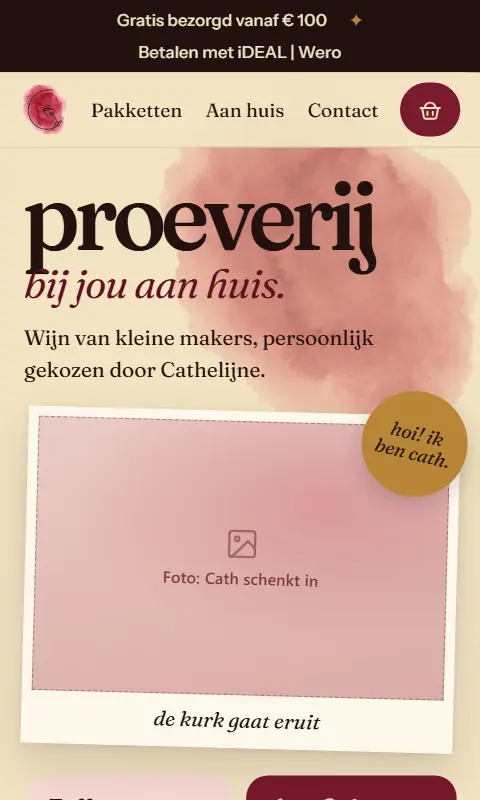
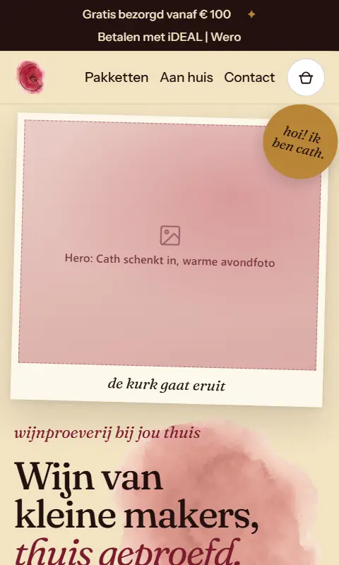
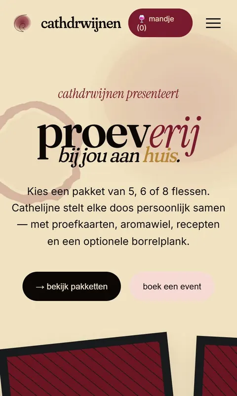
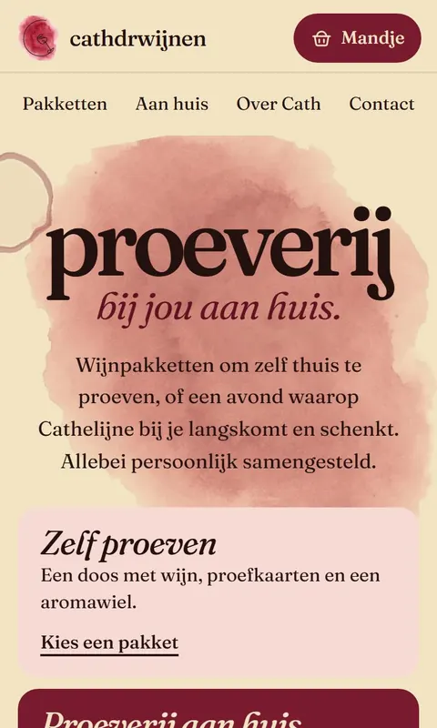
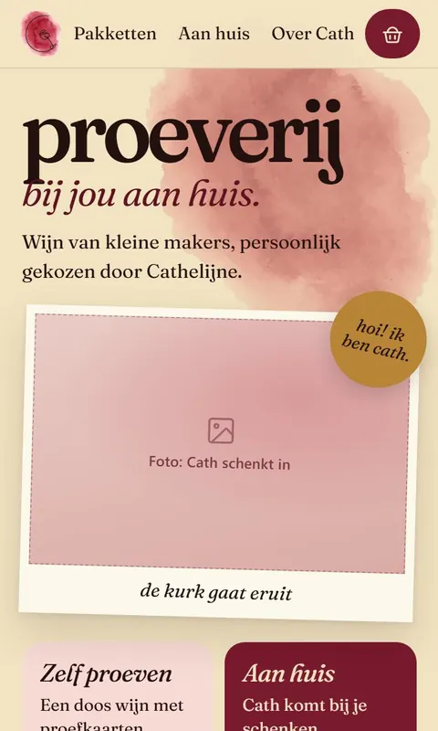
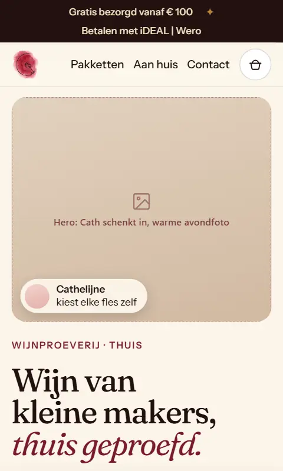

Kies een ontwerp
Zes versies van dezelfde site, van het eerste ontwerp tot nu. Bekijk ze het liefst op je telefoon, daar komen de meeste bezoekers vandaan.

v3 op de telefoon, de Mix op de computer
Mix 2
Op de telefoon de indeling van v3, met de pakketten als keuzelijst. Op de computer de Mix, met het mandje als vaste kolom naast de pakketten: je ziet meteen wat erin zit, zonder iets te openen.
Afrekenen gaat naar dezelfde pagina als v2. Betalen staat online nog uit.
Bekijk Mix 2
Ultra modern met v3
Mix
Ultra modern als basis, strak onder elkaar en fijn leesbaar, met het speelse van v3 erin: de wijnvlekken, de warme papierkleur en de foto's als polaroid met het stickertje "hoi! ik ben cath".
Afrekenen gaat naar dezelfde pagina als v2. Betalen staat online nog uit.
Bekijk de Mix
Het eerste ontwerp
v1
De originele Salon uit de eerste ronde prototypes. Nog zonder webshop.
Bekijk v1
Ons nieuwe ontwerp
v2
Eén lange pagina met een menubalk bovenin, pakketkaarten met "In mandje", een mandje dat inschuift en een afrekenpagina. Betalen staat online nog uit.
Bekijk v2
Andere layout
v3
De pakketten als één keuzelijst met één knop, het mandje als paneel van onderen en de 18+ vraag pas bij de eerste keer "In mandje".
Dit is een prototype: afrekenen is hier nog niet gekoppeld.
Bekijk v3
Ultra modern
Strak en rustig: een vaste menubalk, pakketkaarten met de prijs per fles, een mandje dat laat zien hoeveel je nog nodig hebt voor gratis bezorgen en een proeverij-aanvraag in twee stappen.
Afrekenen gaat naar dezelfde pagina als v2. Betalen staat online nog uit.
Bekijk Ultra modern